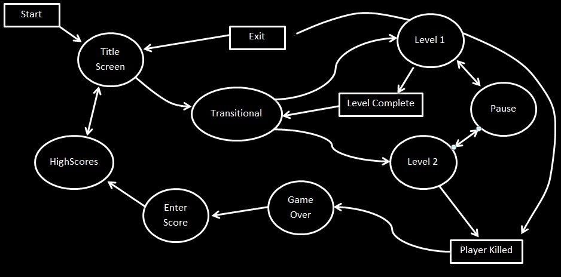

CS25210 Client Side Graphics
Executive summary
This game was forged from a combination of ideas, I wanted the game to be a top down controlled game, and I knew I wanted to have to dodge items, score points and survive. When I looked around the internet for sprite sheets I found a number of RPG sprites, not exactly top down but the same idea of movement none the less. When I started playing around with the player and the context of the game it was easy to come up with the name of the character and the name of the game “Forrest blade”. The concept is quite easy the player starts within a village and has to clear the village of goblins using his sword, on the way Forrest is able to pick up power ups and treasure chests to gain life and points respectively. If you are hit by a goblin then your life will diminish until you have no life remaining and its game over for you.
Picture Board
Technical overview
I have used client side scripting to build this game it is faster and easier to implement than just using a standard programming language. The interaction between the Html5 canvas and JavaScript allows you to easily manipulate graphics and images to suit the purposes of game building. The alternatives to using JavaScript would be to use a ready-made framework or game building system, the advantages of that being the technical ability needed to create a game, It would also hold restrictions in what type of game you could make and hold back some of your creativity as there would be a limit to what you can do. JavaScript is much more superior than JavaFX in creating games, the compatibility with multiple platforms and browsers makes it ideal for web based gaming. The user does not need to install any third-party software to make games work with JavaScript as you would have to do with JavaFX and Silverlight, this make the language very portable and versatile.
There are some key technical areas of my game that I would like to talk about, the first of them being the mapping system I implemented. Each level that I made I designed it using a grid system by combining the 16x16 sprites to create a background I was then able to draw a grid using an excel spread sheet and save it as a .csv file. I then built a java program to process the .csv file and output an array in JavaScript format, when I test for collisions in gameplay it simply loops through the map array to locate background areas to collide with. The second part I would like to highlight would be the AI in the game. Using the grid system I had already created with my java program I was able to implement the A* path finding algorithm that I used to control the AI. Each enemy character will calculate where the player is on the grid and plot a path to him. The directions are then stored in the enemy object and continuously evaluated as they roam around the map towards the player.
Software testing
I have tested my game on multiple browsers and it doesn’t show in problems running the game in the same way every time. When I attempt to load the game on my phone I am not able to select the start option, it is not detecting the touch as a mouse click. My game requires directional arrows in order to move around and is not compatible with the general layout of a smart phone. I did a bit of research into how to make the touch screen compatible with my game but unfortunately couldn’t find any compatible answers to fit the way my game works.
Reflections and future work
The grid system that I have setup makes it very easy to add more levels onto the game, my improvements to the game would include setting up various difficulties for the game. I would also like to include more functionality for the AI, at the moment they only chase you around the map it would make the game harder if they were able to fire or use weapons to attack you. One part of the game I really wanted to get working was the map feature, the square in the top right-hand corner uses the same grid system for the background and creates a mirror image in the corner, this displays the full map and the moving characters as well, I removed the feature as it was slowing down the game considerably and haven’t had time to re-visit it to fix. I like to note that the initial object and animation setups were inspired by tutorial made by a Sam Lancashire (links are provided in the Credits section). On reflection of the project I think that my overall skills and understanding of the JavaScript language grew immensely and I really had the opportunity to show off my programming my creativity. I absolutely loved this assignment and given the freedom of more programming resources I think I could definitely make money from something like this.
© 2014 Byron Morley | Bym1